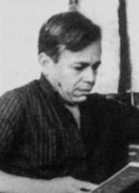

Amaro
Luiz
de Carvalho
CIRCUNSTÂNCIAS DA MORTE
Amaro Luiz de Carvalho foi morto na Casa de Detenção de Recife, onde cumpria pena por subversão, em 22 de agosto de 1971. A causa da morte divulgada pela Secretaria de Segurança de Pernambuco, à época, foi envenenamento. Amaro Luiz teria ingerido um refrigerante envenenado. A falsa versão registrou que ele teria sido morto pelos próprios companheiros de cela e de militância, pois queria abandonar a causa comunista.
À época da morte, foram colhidos depoimentos de presos e vigilantes que estavam na Casa de Detenção do Recife no dia do ocorrido para instrumentalizar o inquérito sobre o caso. No entanto, a maioria dos depoimentos e acareações não contribuiu para elucidar as reais circunstancias e responsáveis pela morte de Amaro Luiz, pois foram contraditórios e incongruentes.
Em um aditamento de depoimento anterior, o detento Adilson Almeida de Santana, conhecido como “Nêga Velha”, apontou o preso Dercílio de Brito como o responsável pelo crime contra Amaro Luiz. O laudo da Perícia Tanatoscópica e o laudo da Análise Toxicológica, feitos nas vísceras da vítima e nas duas garrafas de refrigerantes que estavam no local onde o corpo foi encontrado, constataram que Amaro não ingeriu veneno. Além disso, de acordo com a certidão de óbito, a morte foi causada por “hemorragia pulmonar decorrente de traumatismo do tórax por instrumento contundente”.
Esses elementos permitiram a desconstrução da falsa versão divulgada de morte por envenenamento. O diretor da Casa de Detenção em que Amaro estava custodiado era o coronel da Polícia Militar Olinto Ferraz. O corpo de Amaro Luiz de Carvalho foi sepultado no cemitério de Santo Amaro.
Amaro Luiz de Carvalho was killed in the Recife Detention House, where he was serving a sentence for subversion, on August 22, 1971. The cause of death announced by the Pernambuco Security Secretariat at the time was poisoning. Amaro Luiz allegedly drank a poisoned soft drink. The false version recorded that he had been killed by his own cellmates and fellow militants, as he wanted to abandon the communist cause.
At the time of the death, statements were taken from prisoners and guards who were at the Recife Detention House on the day of the incident to inform the investigation into the case. However, the majority of testimonies and confrontations did not contribute to elucidating the real circumstances responsible for Amaro Luiz's death, as they were contradictory and incongruous.
In an addition to a previous statement, inmate Adilson Almeida de Santana, known as “Nêga Velha”, pointed to inmate Dercilio de Brito as responsible for the crime against Amaro Luiz. The Tanatoscopic Expertise report and the Toxicological Analysis report, carried out on the victim's viscera and on the two bottles of soft drinks that were in the place where the body was found, confirmed that Amaro did not ingest poison. Furthermore, according to the death certificate, death was caused by “pulmonary hemorrhage resulting from trauma to the chest by a blunt instrument”.
These elements allowed the deconstruction of the false version of death due to poisoning. The director of the House of Detention in which Amaro was held was Military Police colonel Olinto Ferraz. Amaro Luiz de Carvalho's body was buried in the Santo Amaro cemetery.
Amaro Luiz de Carvalho fue asesinado en el Centro de Detención de Recife, donde cumplía condena por subversión, el 22 de agosto de 1971. La causa de la muerte anunciada por la Secretaría de Seguridad de Pernambuco en ese momento fue un envenenamiento. Amaro Luiz presuntamente bebió un refresco envenenado. La versión falsa registraba que había sido asesinado por sus propios compañeros de celda y militantes, ya que quería abandonar la causa comunista.
En el momento de la muerte, se tomaron declaraciones a presos y guardias que se encontraban en el Centro de Detención de Recife el día del incidente para informar la investigación del caso. Sin embargo, la mayoría de los testimonios y enfrentamientos no contribuyeron a esclarecer las circunstancias reales responsables de la muerte de Amaro Luiz, por ser contradictorias e incongruentes.
Además de una declaración anterior, el interno Adilson Almeida de Santana, conocido como “Nêga Velha”, señaló al interno Dercilio de Brito como responsable del crimen contra Amaro Luiz. El informe de Pericia Tanatoscópica y el informe de Análisis Toxicológico, realizados a las vísceras de la víctima y a las dos botellas de refrescos que se encontraban en el lugar donde fue encontrado el cuerpo, confirmaron que Amaro no ingirió veneno. Además, según el certificado de defunción, la muerte se produjo por “hemorragia pulmonar resultante de un traumatismo en el tórax con un instrumento contundente”.
Estos elementos permitieron deconstruir la falsa versión de la muerte por envenenamiento. El director del Centro de Detención donde estuvo recluido Amaro era el coronel de la Policía Militar Olinto Ferraz. El cuerpo de Amaro Luiz de Carvalho fue enterrado en el cementerio de Santo Amaro.